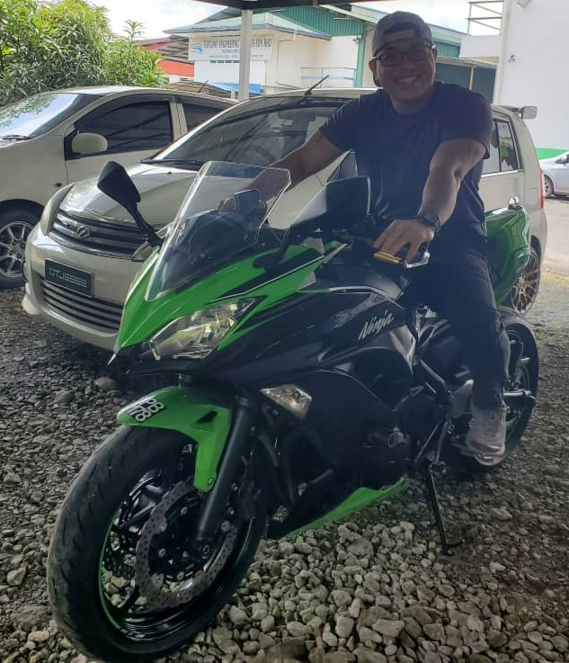

Eivan Kelvin

Summary
Hi, my name is Eivan Kelvin. I really like to learn programming. Even though
currently i work as E&I engineer, but i manage to force myself to learn programming.
I did this due to my passion in programming.
Education
- Degree in Electrical Engineering| Universiti Teknikal Malaysia Melaka → 2018
- Foundation Degree| Kolej Matrikulasi Sarawak → 2015
- Science stream| SMK SIBURAN → 2012
Work Experiance
- E&I engineer | Esteem Energy engineering SDN BHD → 2023 - Present
- Project management task
- Troubleshooting
- costing and arrange for claim
- Electrical engineer | Nam Cheong Dockyard SDN BHD → 2021 - 2022
- Electrical design for ship building
- Project management task
- Electrical engineer | Paragon Megalink SDN BHD → 2020 - 2021
- Project management task
- Costing
- Troubleshooting
- E&I engineer | OCIM SDN BHD → 2019 - 2020
- Project management task
- Troubleshooting
- Spare part Inventory management
- Equipment engineer | Infineon Technologies SDN BHD → 2018 - 2019
- Troubleshooting
- Spare part Inventory management
Skills
- Electrical & Instrument troubleshooting ★★★★☆
- Microsoft office ★★★★☆
- programming ★★★☆☆
Other